Capabilities
Three disciplines. One transformation ecosystem.
Most organizations distribute these three disciplines across three providers, creating handoff risk at every boundary. Experts Gate by GES was architected around those boundaries, not around the domains.
Consulting & Advisory
Governance design before operational investment.
Structural assessment and governance architecture come first. Strategic direction, platform selection and investment follow from what the diagnostic reveals, not from a product catalogue.
- Enterprise Architecture
- Enterprise Transformation Strategy
- Management Consultancy
- ITSM / EA Consultancy
- Governance, Risk Management & Compliance
- AI Governance Readiness
- Data Governance
- Business Continuity
- ISO & Operational Excellence
- Digital Maturity & Change Enablement
Connects to Intelligent Operations: governed environments are designed here before any platform is deployed.
Intelligent Operations & Technology
Platforms deployed into governed environments.
Service management, GRC, observability and automation platforms, implemented through exclusive and strategic technology partnerships and deployed only into environments prepared to receive them.
- ITSM & ESM
- GRC Platforms
- Service Operations
- AI-Enabled Service Operations
- Workflow Automation & Process Modernization
- Observability
- Digital Workspace & Asset Visibility
- Unified Endpoint Management
- ERP Solutions
- Enterprise Architecture Tooling
Connects to Workforce Enablement: capability is embedded during implementation, not delivered after go-live.


Exclusive Alemba partner for the region.
Training & Workforce Enablement
Capability embedded from day one.
Leadership, workforce and technical programmes that equip institutions to govern the systems they operate, delivered with accredited training and certification partners.
- Leadership Enablement
- Workforce Transformation Programs
- Coaching
- Corporate Training & Certification
- Technical Capability Building
- ISO Certification
- Long-Term Adoption & Change Management
- Operational Readiness
Connects to Consulting & Advisory: operational maturity is measured against the outcomes defined at diagnosis.
Frameworks, standards & regulations
Every engagement is anchored to recognised frameworks and to the regulations that govern your sector.
Frameworks
Global standards & regulations

National standards & regulations
Where to begin